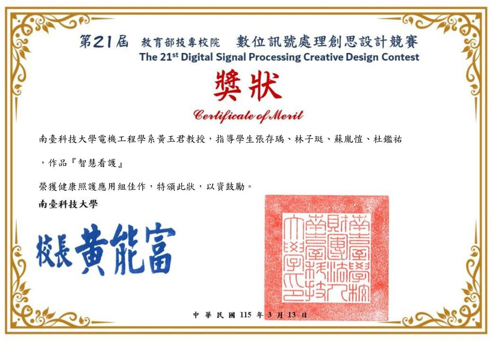
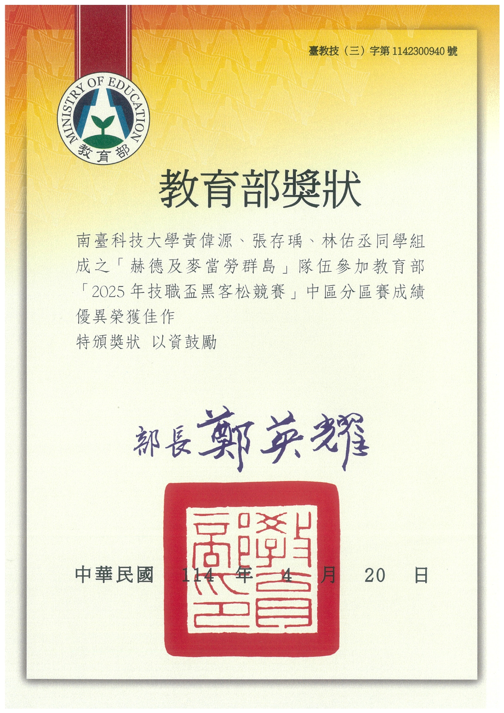

南臺科技大學 · 電機工程系 控制與晶片組
Southern Taiwan University of Science and Technology
電機工程系畢業，專注於嵌入式系統、生理訊號處理與邊緣智慧。
從感測器、微控制器到 App 與資料庫，喜歡把一套系統從頭到尾做出來，並思考如何讓它「可靠地」察覺異常。
Electrical Engineering graduate focused on embedded systems, physiological signal processing and edge intelligence.
I enjoy building complete systems — from sensors and microcontrollers to apps and databases — and making them detect anomalies reliably.
我是張存瑀，2026 年 6 月畢業於南臺科技大學電機工程系控制與晶片組。大學期間參與多項實作專題與競賽，從機械手臂、移動載具到生理監測系統都親手做過。
投入最深的是大學專題「智慧看護系統」：在開發多床位版本時，我發現系統常因病人翻身或電極鬆脫而誤發警報──資料「有收到」不代表「可以相信」。這個問題讓我開始研讀訊號品質評估與輕量化模型的文獻，也決定繼續攻讀碩士。
I graduated from the Department of Electrical Engineering (Control & IC Design track), STUST, in June 2026. During college I built robotic arms, mobile vehicles and physiological monitoring systems through hands-on projects and competitions.
My main project is a Smart Nursing Monitoring System. While extending it to multiple beds, I found that false alarms caused by motion or loose electrodes are common — receiving data does not mean the data can be trusted. This question led me to study signal quality assessment and lightweight models, and to pursue a master's degree.
整合心電、血氧心率、體溫與點滴液位／重量感測，經藍牙即時傳到手機 App 並發出異常警示，之後擴充為多床位集中監控。
Combines ECG, SpO₂/HR, temperature and IV level/weight sensing, streams to a mobile app over BLE with alerts, later extended to multi-bed monitoring.
我的負責：App 與資料庫開發
My role: App & database
結合視覺載具與機械手臂的照護輔助作品，模擬在照護場景中協助取藥，並依載具實際停下的位置即時調整手臂姿態。
A care-assist robot pairing a vision vehicle with a robotic arm to fetch medicine, adjusting the arm to where the vehicle actually stops.
我的負責：機械手臂藥品抓取
My role: Robotic-arm grasping
以移動載具搭配影像偵測進行交通異常監測，親手完成透明壓克力車體的切割、鑽孔與組裝，打造四馬達驅動平台。
A mobile vehicle with image detection for traffic anomalies; I cut, drilled and assembled the clear-acrylic chassis with a four-motor drive.
我的負責：車輛硬體製作
My role: Vehicle hardware
以 ResNet、VGG16 等卷積神經網路架構重現論文方法，比較不同模型在植物病害影像上的分類表現與差異。
Reproduced published methods with ResNet and VGG16 CNNs and compared their classification performance on plant disease images.
我的負責：模型重現與比較
My role: Model reproduction & comparison
將單床版本擴充為多床位集中監控架構，並於競賽現場向評審展示系統與即時監控畫面。
Extended the single-bed system to a multi-bed architecture and demonstrated the live monitoring system to the judges.

帶領一個小隊，協助國小學童組裝無人機並進行教學，練習把專業內容用孩子聽得懂的方式說明。
Led a team of elementary school students to assemble drones and taught the basics in kid-friendly language.
與隊友黃偉源、林佑丞以「交通影像異常監測平台」參賽，我負責車輛硬體製作，獲教育部頒發中區分區賽佳作。
With teammates Huang Wei-Yuan and Lin Yu-Cheng, built a traffic image anomaly monitoring platform (I built the vehicle hardware) and received a Merit Award from the Ministry of Education.

以盛群 HT32 微控制器為核心的生理與點滴監測系統，除硬體以外的軟體皆由我負責。
A vital-sign and IV monitoring system built on the Holtek HT32 MCU; I was responsible for all non-hardware software.
競賽官網Official Site →擅長以程式語言結合開發板進行系統整合，從感測器、韌體到 App 與資料庫都有實作經驗。
Skilled in system integration with development boards, with hands-on experience from sensors and firmware to apps and databases.
// 歡迎研究合作、專案邀請或技術交流Open to research collaborations, projects and technical discussions